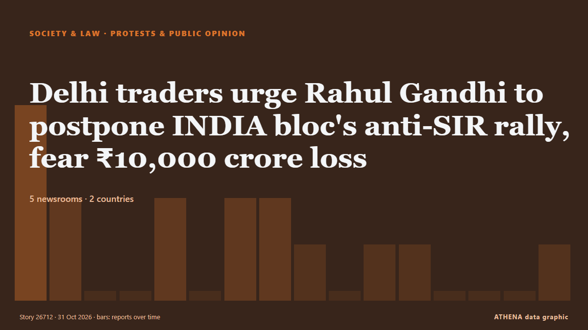

Delhi traders urge Rahul Gandhi to postpone INDIA bloc's anti-SIR rally, fear ₹10,000 crore loss

The traders have highlighted the Diwali season, as well as the presence of wholesale and retail markets within a 5-km radius of Ramlila Maidan. de Hindustan Times
Informado de forma independiente por 5 medios de 2 países desde el 24 oct; el primero fue Times of India; la cobertura va perdiendo fuerza. ATHENA califica el riesgo como moderado (2.7/10), sobre todo por la gravedad del daño descrito y la calidad de las pruebas. La confianza es del 68 % (alta): lo corroboran 5 medios independientes, con una fiabilidad media de las fuentes del 68 %. Medios por país: India (15), Emiratos Árabes Unidos (1). Cobertura: del 24 oct al 31 oct, 180 horas.
Por qué importa: Los cambios legales y de política modifican derechos, obligaciones y servicios públicos para las personas afectadas.
Qué ha cambiado: 1 información nueva en las 24 horas hasta el 31 oct.
Primer titular: Delhi traders urge Rahul Gandhi to postpone INDIA bloc's Ramlila Maidan rally over Diwali business loss fears
Los titulares se muestran en inglés, tal como se publicaron.
De un vistazo
Seleccionado, puntuado y redactado por la metodología publicada de ATHENA. Ningún editor interviene en eventos concretos. Cómo se elabora ›
| 24 Oct 05:55 UTC | 4 |
|---|---|
| 24 Oct 17:55 UTC | 2 |
| 25 Oct 05:55 UTC | 0 |
| 25 Oct 17:55 UTC | 0 |
| 26 Oct 05:55 UTC | 2 |
| 26 Oct 17:55 UTC | 0 |
| 27 Oct 05:55 UTC | 2 |
| 27 Oct 17:55 UTC | 2 |
| 28 Oct 05:55 UTC | 1 |
| 28 Oct 17:55 UTC | 0 |
| 29 Oct 05:55 UTC | 1 |
| 29 Oct 17:55 UTC | 1 |
| 30 Oct 05:55 UTC | 0 |
| 30 Oct 17:55 UTC | 0 |
| 31 Oct 05:55 UTC | 0 |
| 31 Oct 17:55 UTC | 1 |
| 24 Oct 06:15 UTC | 0.0 |
|---|---|
| 24 Oct 06:40 UTC | 1.2 |
| 24 Oct 07:42 UTC | 1.8 |
| 26 Oct 11:36 UTC | 2.9 |
| 31 Oct 18:10 UTC | 2.7 |
Por qué estas cifras
Importancia
Riesgo
Confianza
La cobertura: quién informó y cuándo
titular tal como se publicó · abre el original- Times of India · India'Rs 10k cr at risk': Traders' body urges Rahul to defer Delhi rally amid Diwali season
- The Hindu · IndiaCTI urges Rahul Gandhi to defer Nov 1 INDIA bloc rally, warns of ₹10,000 crore trade loss
- NDTV · IndiaDelhi Traders Ask Rahul Gandhi To Postpone November 1 Rally Over Diwali Rush
- Hindustan Times · IndiaDelhi traders urge Rahul Gandhi to postpone INDIA bloc's anti-SIR rally, fear ₹10,000 crore loss
- Times of India · IndiaDefer Nov 1 rally, will hit festive business, traders urge Rahul; BJP raps Congress
- Times of India · India'Ignore strike calls': LPG distributor body ahead of Rahul Gandhi's rally in Delhi
- The Hindu · IndiaTell Modi to sack Gyanesh Kumar, protests will stop in 30 seconds: Rahul to traders
- NDTV · IndiaRahul Gandhi Tells Traders How To End Ramlila Maidan Protest In '30 Seconds'
- Hindustan Times · IndiaTraders body raise concerns over Rahul Gandhi's Ramlila Maidan rally on Nov 1; cite traffic, parking issues
- Gulf News · Emiratos Árabes UnidosDelhi traders fear Rs100 billion losses as Rahul Gandhi refuses to postpone rally
- NDTV · India20 Markets, 20 Traders, 20 Minutes: Delhi Trade Body's Offer To Rahul Gandhi
- The Hindu · IndiaCTI writes to Rahul Gandhi again on INDIA bloc's November 1 rally, seeks meeting
- Times of India · India'We don't want a fight': Delhi traders' body writes to Rahul again over Nov 1 rally
- Hindustan Times · IndiaDelhi traders urge Rahul Gandhi to postpone INDIA bloc's Ramlila Maidan rally over Diwali business loss fears
- Times of India · India'Rs 12,000cr trade at stake': Traders now write to Sonia to defer Rahul's Nov 1 rally
- NDTV · India'Protest, Then Do Some Shopping': Rahul Gandhi After Traders Object To November 1 Rally